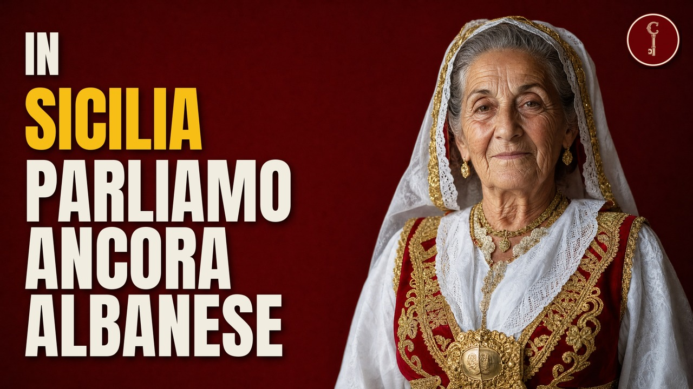

Sicilia
26 cognomi siciliani che rivelano che i tuoi antenati erano albanesi

Guarda il video su YouTubeFonti della ricerca
- Piana degli Albanesi (it.wikipedia)
- Contessa Entellina (it.wikipedia)
- Santa Cristina Gela (it.wikipedia)
- Palazzo Adriano (it.wikipedia)
- Mezzojuso (it.wikipedia)
- Biancavilla (it.wikipedia)
- Bronte (it.wikipedia)
- San Michele di Ganzaria (it.wikipedia)
- Sant'Angelo Muxaro (it.wikipedia)
- Arbëreshë (it.wikipedia)
- Mezzojuso (en.wikipedia)
- Santa Cristina Gela (en.wikipedia)
- Biancavilla (en.wikipedia)
- Palazzo Adriano (en.wikipedia)
- Francesco Crispi (en.wikipedia)
- Francesco Crispi (it.wikipedia)
- Paolo Maria Parrino (it.wikipedia)
- Nicola Barbato (it.wikipedia)
- Giorgio Guzzetta (it.wikipedia)
- Demetrio Reres (en.wikipedia)
- Muzaka family (en.wikipedia)
- Bua family (en.wikipedia)
- Enrico Cuccia (en.wikipedia)
- Nicolò Chetta (it.wikipedia)
- Giuseppe Schirò, arcivescovo (it.wikipedia)
- P. P. Rodotà, Dell'origine, progresso e stato presente del rito greco in Italia, tomo III (Roma 1763), libro III cap. V 'Delle colonie e chiese degli Albanesi... nella Sicilia' (pp. 104-127)
- V. Amico, Dizionario topografico della Sicilia, trad. e note di G. Di Marzo, vol. I (Palermo 1855): voci Biancavilla, Contessa
- V. Amico, Dizionario topografico della Sicilia, trad. e note di G. Di Marzo, vol. II (Palermo 1856): voce Piana dei Greci, nota (1) di Di Marzo con i nomi dei concessionari del 1488; voce Palazzo Adriano
- V. Dorsa, Su gli Albanesi. Ricerche e pensieri (Napoli 1847), pp. 88-95
- F. Tajani, Le istorie albanesi (Salerno 1886)
- T. Morelli, Cenni storici sulla venuta degli albanesi nel Regno delle Due Sicilie (Napoli 1842), tabella dei paesi albanesi di Sicilia
- M. G. Giacomarra, La vicenda arbëreshe tra storia e mito. I secoli del silenzio e la costruzione d'identità (repository IRIS Università di Palermo)
- Arbëreshë people (en.wikipedia)
- R. Petrotta, Arbëresht në Siqeli / Gli Albanesi in Sicilia (Tirana 1941)
- Moisi Golemi (en.wikipedia)
- Arianiti family (en.wikipedia)
- Golem of Kruja (en.wikipedia)
- Prifti (en.wikipedia, pagina cognome)
- Nicola Barbato (en.wikipedia)
- Barbato (en.wikipedia, pagina cognome)
- Qendër Tepelenë (en.wikipedia), elenco villaggi
- Immagine della pagina 348 di Amico/Di Marzo vol. II (leaf n353 del BookReader), verifica visiva della nota (1) alla voce Piana dei Greci
- Immagine della pagina 10 di Tajani, Le istorie albanesi (1886), leaf n441: elenco dei 'Primati' di Piana in forma albanese
- Immagine della pagina 74 di Dorsa, Su gli Albanesi (1847), leaf n77: voce 'Barbato'
- Giacomo Schirò (it.wikipedia)
- Borgo Schirò (it.wikipedia)
- Paolo Schirò (it.wikipedia)
- Giuseppe Schirò (en.wikipedia)
- Luca Matranga (it.wikipedia)
- Luca Matranga (en.wikipedia)
- Pietro Matranga (it.wikipedia)
- Mataranga family (en.wikipedia)
- Charles Matranga (en.wikipedia)
- Castriota (famiglia) (it.wikipedia)
- Kastrioti family (en.wikipedia)
- Demetrio Reres (it.wikipedia)
- Nicolò Figlia (it.wikipedia)
- Musacchia, regione storica dell'Albania (it.wikipedia)
- Myzeqe (en.wikipedia)
- Giuseppe Crispi (it.wikipedia)
- Giuseppe Crispi (en.wikipedia)
- Gabriele Dara [the Younger] (en.wikipedia)
- Rrjolli (en.wikipedia)
- Dara, Greece (en.wikipedia)
- Enrico Cuccia (it.wikipedia)
- Simone Cuccia (it.wikipedia)
- Giorgio Stassi (it.wikipedia)
- Fabio Stassi (it.wikipedia)
- Demetrio Camarda (it.wikipedia)
- Demetrio Camarda (en.wikipedia)
- Camarda, frazione dell'Aquila (it.wikipedia)
- crispus (en.wiktionary)
- List of Albanians in Italy (en.wikipedia)
- V. Amico, Dizionario topografico della Sicilia, trad. G. Di Marzo, vol. II (1856), voce Palazzo Adriano, pp. 243-244, nota (1) di Di Marzo: pagine verificate sull'immagine (leaf n248-n249)
- V. Amico, Dizionario topografico della Sicilia, trad. G. Di Marzo, vol. I (1855), voce Alia (feudatari Crispo) e voce Caronia/feudo (Tommaso Crispi)
- V. Dorsa, Su gli Albanesi (1847), p. 86 (leaf n89) e p. 89 (leaf n92): pagine verificate sull'immagine
- B. Radice, Memorie storiche di Bronte (ed. 1926-28), trascrizione digitale dell'Associazione Bronte Insieme su archive.org; cap. sulle origini, pp. 28-29 della trascrizione; cap. sul colloquio del 3 settembre 1595 (p. 134); capp. su Collegio di Maria e Collegio Capizzi
- Capitoli tra Antonio Gravina barone di Ganzaria e la colonia albanese (25 settembre 1534), in Archivio Storico Siciliano, N.S., anno IV (1879), Miscellanea pp. 349-360 (curatore attribuito a Raffaele Starrabba dalla voce F8)
- Albanese (cognome) (it.wikipedia)
- Albanese (en.wikipedia, voce sul cognome)
- Anthony Albanese (en.wikipedia)
- Dielli (Albanian paganism) (en.wikipedia)
- Sclerosis (medicine) (en.wikipedia), etimologia
- V. Matranga, Sulle concordanze linguistiche della parlata di Piana degli Albanesi (PA) con la Sicilia orientale, Lingue e Linguaggi 59 (2023), pp. 213-229, repository IRIS Università di Palermo (CC BY 3.0)
- Girolamo Sirchia (it.wikipedia)
- Cognomix, Mappe dei cognomi italiani (famiglie per cognome e per provincia): ordine della lista e diffusione detta in voce in forma approssimata, senza citare la fonte (bibbia v1.6 §5)
- NARA, Italians to America Passenger Data File 1855-1900 (NAID 1746097), pubblico dominio
- U.S. Census Bureau, Frequently Occurring Surnames 2010 e 2020 (cognomi con >= 100 portatori), pubblico dominio
- INSEE, Fichier des noms (nascite per cognome e decennio 1891-2000; soglia 30), licence ouverte
- INE (Spagna), Apellidos con frecuencia >= 100 come primo cognome, Censo de población 1/1/2025
- Istat, Popolazione residente per età, sesso e stato civile al 1° gennaio 2025 (demo.istat.it), CC BY 4.0
- Fondazione Migrantes, Rapporto Italiani nel Mondo 2025, allegati socio-statistici, elaborazione su dati AIRE e Istat
- Istat, censimenti della popolazione 1861-2021, via template Demografia di it.wikipedia (fonte dichiarata Istat)
- it.wikipedia (pagine dei comuni), lette il 14/10/2026; fatti riformulati
- Wikidata (CC0), interrogazione SPARQL del 14/10/2026 su P734 (cognome) e P19 (luogo di nascita)
Immagini e video
0:00Pexels 6292872
cottonbro studio · Pexels License · Pexels
cottonbro studio · Pexels License · Pexels
0:04Pexels 27402068
Attila Pergel · Pexels License · Pexels
Attila Pergel · Pexels License · Pexels
0:06Pexels 36531962
Tom Jurman · Pexels License · Pexels
Tom Jurman · Pexels License · Pexels
0:09Pexels 30448962
Rasa Media · Pexels License · Pexels
Rasa Media · Pexels License · Pexels
0:11Sëndahstinë dygluhësh
Gspata · CC BY-SA 4.0 · Wikimedia Commons

Gspata · CC BY-SA 4.0 · Wikimedia Commons
0:13Monte della Fiera - panoramio
trolvag · CC BY-SA 3.0 · Wikimedia Commons

trolvag · CC BY-SA 3.0 · Wikimedia Commons
0:19Pamje e Horës së Arbëreshëvet
Demetrio46 · CC BY 3.0 · Wikimedia Commons

Demetrio46 · CC BY 3.0 · Wikimedia Commons
0:24Bashkia e horës së Kuntisës
Gspata · CC BY-SA 4.0 · Wikimedia Commons

Gspata · CC BY-SA 4.0 · Wikimedia Commons
0:27Piana degli Albanesi - cattedrale di San Demetrio Megalomartire - 2026-09-26 inside
GiovanniPen · CC BY-SA 4.0 · Wikimedia Commons

GiovanniPen · CC BY-SA 4.0 · Wikimedia Commons
0:30Vedute (Piana degli Albanesi) 29 03 2026 15
Effems · CC0 · Wikimedia Commons
_29_03_2026_15.jpg){kind=link}
Effems · CC0 · Wikimedia Commons
0:34Portrait of Skanderbeg (1466)
Unknown authorUnknown author · Public domain · Wikimedia Commons
.png){kind=link}
Unknown authorUnknown author · Public domain · Wikimedia Commons
0:45Skanderbeg by Dominicus Custos
Dominicus Custos · Public domain · Wikimedia Commons

Dominicus Custos · Public domain · Wikimedia Commons
1:04Pexels 39017948
Christopher More · Pexels License · Pexels
Christopher More · Pexels License · Pexels
1:05PiazzaumbertoIpalazzoad1
Markos90 · Public domain · Wikimedia Commons

Markos90 · Public domain · Wikimedia Commons
1:10Etna Biancavilla
Davide Restivo from Lenzburg, Aarau, Switzerland · CC BY-SA 2.0 · Wikimedia Commons

Davide Restivo from Lenzburg, Aarau, Switzerland · CC BY-SA 2.0 · Wikimedia Commons
1:19Monreale Cathedral exterior BW 2012-10-09 10-23-10
Berthold Werner · CC BY-SA 3.0 · Wikimedia Commons

Berthold Werner · CC BY-SA 3.0 · Wikimedia Commons
1:32Sëndahstina
M. IannizzottoThe original uploader was Michele.iannizzotto at Italian Wikipedia. · CC BY 3.0 · Wikimedia Commons

M. IannizzottoThe original uploader was Michele.iannizzotto at Italian Wikipedia. · CC BY 3.0 · Wikimedia Commons
1:36Attraverso la Sicilia (anni 1910), Tiziano Film, fotografia di Piero Marelli
Tiziano Film · Public Domain Mark 1.0 · archive.org
Tiziano Film · Public Domain Mark 1.0 · archive.org
1:40Emigrants (i.e. immigrants) landing at Ellis Island (1903)
Thomas A. Edison, Inc. · Public Domain Mark 1.0 · archive.org
Thomas A. Edison, Inc. · Public Domain Mark 1.0 · archive.org
1:44Palazzo Corvino
Stendhal55 · CC BY-SA 4.0 · Wikimedia Commons

Stendhal55 · CC BY-SA 4.0 · Wikimedia Commons
1:47Fontana di piazza Umberto I
Svtflp · CC BY-SA 3.0 · Wikimedia Commons

Svtflp · CC BY-SA 3.0 · Wikimedia Commons
1:50Comune di Contessa Entellina PA skyline
Swoolverton · CC BY-SA 4.0 · Wikimedia Commons

Swoolverton · CC BY-SA 4.0 · Wikimedia Commons
1:52Panor piana
No machine-readable author provided. Arbereshe assumed (based on copyright claims). · Public domain · Wikimedia Commons

No machine-readable author provided. Arbereshe assumed (based on copyright claims). · Public domain · Wikimedia Commons
1:55The Italian (1915)
Paramount Pictures · Public Domain Mark 1.0 · archive.org
Paramount Pictures · Public Domain Mark 1.0 · archive.org
1:57New Orleans (1923), Ford Educational Library
Ford Motor Company · Pubblico dominio (USA, 1923) · archive.org
Ford Motor Company · Pubblico dominio (USA, 1923) · archive.org
1:59Gruppo di ragazzi in costume albanese di Palazzo Adriano
Utente:skanderbeg · Public domain · Wikimedia Commons

Utente:skanderbeg · Public domain · Wikimedia Commons
2:02SAN MICHELE DI GANZARIA
Michele.iannizzotto · CC BY-SA 4.0 · Wikimedia Commons

Michele.iannizzotto · CC BY-SA 4.0 · Wikimedia Commons
2:04Arrival of immigrants, Ellis Island (1906)
American Mutoscope & Biograph, operatore Billy Bitzer · Pubblico dominio (USA, 1906) · archive.org
American Mutoscope & Biograph, operatore Billy Bitzer · Pubblico dominio (USA, 1906) · archive.org
2:08Pexels 5674557
ROMAN ODINTSOV · Pexels License · Pexels
ROMAN ODINTSOV · Pexels License · Pexels
2:11Pexels 18016605
Mr Pixel · Pexels License · Pexels
Mr Pixel · Pexels License · Pexels
2:15Pexels 29083757
Joshua Woroniecki · Pexels License · Pexels
Joshua Woroniecki · Pexels License · Pexels
2:27Pexels 27857347
Martyn Day · Pexels License · Pexels
Martyn Day · Pexels License · Pexels
2:29Pexels 17110950
Trevor Sullivan · Pexels License · Pexels
Trevor Sullivan · Pexels License · Pexels
2:53Pexels 9900004
E. Yorda · Pexels License · Pexels
E. Yorda · Pexels License · Pexels
2:56Pexels 19877526
Joshua Woroniecki · Pexels License · Pexels
Joshua Woroniecki · Pexels License · Pexels
2:59Pexels 8160995
Alena Darmel · Pexels License · Pexels
Alena Darmel · Pexels License · Pexels
3:02Pexels 34604734
Igor Kira · Pexels License · Pexels
Igor Kira · Pexels License · Pexels
3:07Pexels 6248255
Kampus Production · Pexels License · Pexels
Kampus Production · Pexels License · Pexels
3:17Vlorë (20508)
Orest222 · CC BY-SA 4.0 · Wikimedia Commons
.jpg){kind=link}
Orest222 · CC BY-SA 4.0 · Wikimedia Commons
3:20Albanians of Sicily flag
Gspata · CC BY-SA 4.0 · Wikimedia Commons

Gspata · CC BY-SA 4.0 · Wikimedia Commons
3:25Pexels 37127421
Özgür Sürmeli · Pexels License · Pexels
Özgür Sürmeli · Pexels License · Pexels
3:32Pasqua a Piana degli Albanesi
Eparchia di Piana degli Albanesi · CC BY-SA 4.0 · Wikimedia Commons

Eparchia di Piana degli Albanesi · CC BY-SA 4.0 · Wikimedia Commons
3:37Attraverso la Sicilia (anni 1910), Tiziano Film, fotografia di Piero Marelli
Tiziano Film · Public Domain Mark 1.0 · archive.org
Tiziano Film · Public Domain Mark 1.0 · archive.org
3:41Pexels 3967170
K · Pexels License · Pexels
K · Pexels License · Pexels
3:43Pexels 32836714
Mihaela Claudia Puscas · Pexels License · Pexels
Mihaela Claudia Puscas · Pexels License · Pexels
3:50PSM V82 D022 An italian family at ellis island
Unknown authorUnknown author · Public domain · Wikimedia Commons

Unknown authorUnknown author · Public domain · Wikimedia Commons
4:02Pexels 26583632
Orhan Pergel · Pexels License · Pexels
Orhan Pergel · Pexels License · Pexels
4:05Pexels 30403470
AP Vibes · Pexels License · Pexels
AP Vibes · Pexels License · Pexels
4:10Vedute (Piana degli Albanesi) 29 03 2026 16
Effems · CC0 · Wikimedia Commons
_29_03_2026_16.jpg){kind=link}
Effems · CC0 · Wikimedia Commons
4:24Vedute (Piana degli Albanesi) 29 03 2026 09
Effems · CC0 · Wikimedia Commons
_29_03_2026_09.jpg){kind=link}
Effems · CC0 · Wikimedia Commons
4:50Museo Civico Nicola Barbato - Piana degli Albanesi 07
Daniele Pugliesi · CC BY-SA 3.0 · Wikimedia Commons

Daniele Pugliesi · CC BY-SA 3.0 · Wikimedia Commons
4:55Pexels 32836714
Mihaela Claudia Puscas · Pexels License · Pexels
Mihaela Claudia Puscas · Pexels License · Pexels
5:00Pexels 19896381
K · Pexels License · Pexels
K · Pexels License · Pexels
5:02Pexels 20156147
K · Pexels License · Pexels
K · Pexels License · Pexels
5:04Emigrants (i.e. immigrants) landing at Ellis Island (1903)
Thomas A. Edison, Inc. · Public Domain Mark 1.0 · archive.org
Thomas A. Edison, Inc. · Public Domain Mark 1.0 · archive.org
5:07Lago di Piana degli Albanesi
Pequod76 · CC BY-SA 3.0 · Wikimedia Commons

Pequod76 · CC BY-SA 3.0 · Wikimedia Commons
5:10Pexels 36803851
Simone Bergamasco · Pexels License · Pexels
Simone Bergamasco · Pexels License · Pexels
5:36Pexels 14310308
witchagron buapa · Pexels License · Pexels
witchagron buapa · Pexels License · Pexels
5:47Kastro Pantokratora, Preveza - 1
Annatsach · CC BY-SA 4.0 · Wikimedia Commons

Annatsach · CC BY-SA 4.0 · Wikimedia Commons
5:58Piazza Sant'Oronzo (Lecce)
Bernard Gagnon · CC0 · Wikimedia Commons
.jpg){kind=link}
Bernard Gagnon · CC0 · Wikimedia Commons
6:01Pexels 5617291
Askar Abayev · Pexels License · Pexels
Askar Abayev · Pexels License · Pexels
6:07Pexels 30840796
Frank Litschel · Pexels License · Pexels
Frank Litschel · Pexels License · Pexels
6:09Arrival of immigrants, Ellis Island (1906)
American Mutoscope & Biograph, operatore Billy Bitzer · Pubblico dominio (USA, 1906) · archive.org
American Mutoscope & Biograph, operatore Billy Bitzer · Pubblico dominio (USA, 1906) · archive.org
6:14Pexels 8087904
Yaroslav Shuraev · Pexels License · Pexels
Yaroslav Shuraev · Pexels License · Pexels
6:22Pexels 11011835
Billy Llano · Pexels License · Pexels
Billy Llano · Pexels License · Pexels
6:24Contessa Entellina Italo-Albanian priest and deacon
Gspata · CC BY-SA 4.0 · Wikimedia Commons

Gspata · CC BY-SA 4.0 · Wikimedia Commons
6:43Museo Civico Nicola Barbato - Piana degli Albanesi 09
Daniele Pugliesi · CC BY-SA 3.0 · Wikimedia Commons

Daniele Pugliesi · CC BY-SA 3.0 · Wikimedia Commons
6:45Piana degli Albanesi - cattedrale di San Demetrio Megalomartire - 2026-09-26 plaque4
GiovanniPen · CC BY-SA 4.0 · Wikimedia Commons

GiovanniPen · CC BY-SA 4.0 · Wikimedia Commons
6:58Ignoto, veduta del porto di livorno, xvii secolo 01
vedi pagina del file · CC BY 3.0 · Wikimedia Commons

vedi pagina del file · CC BY 3.0 · Wikimedia Commons
7:02Pexels 32836714
Mihaela Claudia Puscas · Pexels License · Pexels
Mihaela Claudia Puscas · Pexels License · Pexels
7:06Pexels 32727078
Sergey Guk · Pexels License · Pexels
Sergey Guk · Pexels License · Pexels
7:10Lago Piana degli Albanesi
Costacostacostacosta · CC BY-SA 4.0 · Wikimedia Commons

Costacostacostacosta · CC BY-SA 4.0 · Wikimedia Commons
7:15Pexels 38603541
Malcoln Oliveira · Pexels License · Pexels
Malcoln Oliveira · Pexels License · Pexels
7:41Overview of Piana degli Albanesi
Gspata · CC BY-SA 4.0 · Wikimedia Commons

Gspata · CC BY-SA 4.0 · Wikimedia Commons
7:44Hora e Arbëreshëvet. Panoramo
Susomoinhos · CC BY-SA 4.0 · Wikimedia Commons

Susomoinhos · CC BY-SA 4.0 · Wikimedia Commons
7:59Chiesa di Sant'Antonio il Grande
Davide Mauro · CC BY-SA 4.0 · Wikimedia Commons

Davide Mauro · CC BY-SA 4.0 · Wikimedia Commons
8:22The Italian (1915)
Paramount Pictures · Public Domain Mark 1.0 · archive.org
Paramount Pictures · Public Domain Mark 1.0 · archive.org
8:27Arrival of immigrants, Ellis Island (1906)
American Mutoscope & Biograph, operatore Billy Bitzer · Pubblico dominio (USA, 1906) · archive.org
American Mutoscope & Biograph, operatore Billy Bitzer · Pubblico dominio (USA, 1906) · archive.org
8:31Pexels 20413417
Orhan Pergel · Pexels License · Pexels
Orhan Pergel · Pexels License · Pexels
8:39Hora
No machine-readable author provided. Djalo24 assumed (based on copyright claims). · Public domain · Wikimedia Commons

No machine-readable author provided. Djalo24 assumed (based on copyright claims). · Public domain · Wikimedia Commons
8:42View of Mount Etna from Reggio Calabria - Italy - 10 Feb. 2017 - (1)
Jacopo Werther · CC BY-SA 4.0 · Wikimedia Commons
.jpg){kind=link}
Jacopo Werther · CC BY-SA 4.0 · Wikimedia Commons
8:44Centro storico (Bronte) 06 10 2024 01
Effems · CC0 · Wikimedia Commons
_06_10_2024_01.jpg){kind=link}
Effems · CC0 · Wikimedia Commons
8:56Edicola (Bronte) 06 10 2024 01
Effems · CC0 · Wikimedia Commons
_06_10_2024_01.jpg){kind=link}
Effems · CC0 · Wikimedia Commons
9:02Scorcio di Bronte 02
Davide Mauro · CC BY-SA 4.0 · Wikimedia Commons

Davide Mauro · CC BY-SA 4.0 · Wikimedia Commons
9:06Pexels 31819755
Joshua Woroniecki · Pexels License · Pexels
Joshua Woroniecki · Pexels License · Pexels
9:18Pexels 6810139
ROMAN ODINTSOV · Pexels License · Pexels
ROMAN ODINTSOV · Pexels License · Pexels
9:28Maniace abbey portal
epanto · CC BY-SA 2.0 · Wikimedia Commons

epanto · CC BY-SA 2.0 · Wikimedia Commons
9:32Pexels 5998003
cottonbro studio · Pexels License · Pexels
cottonbro studio · Pexels License · Pexels
9:42Pexels 30264667
Nirjhar Basak · Pexels License · Pexels
Nirjhar Basak · Pexels License · Pexels
10:08Vlorë (11652)
Orest222 · CC BY-SA 4.0 · Wikimedia Commons
.jpg){kind=link}
Orest222 · CC BY-SA 4.0 · Wikimedia Commons
10:19Piana degli Albanesi - chiesa di Maria Santissima Odigitria - 2026-09-27 altare
GiovanniPen · CC BY-SA 4.0 · Wikimedia Commons

GiovanniPen · CC BY-SA 4.0 · Wikimedia Commons
10:34Piana degli Albanesi - cattedrale di San Demetrio Megalomartire - 2026-09-26 plaque2
GiovanniPen · CC BY-SA 4.0 · Wikimedia Commons

GiovanniPen · CC BY-SA 4.0 · Wikimedia Commons
10:44Emigrants (i.e. immigrants) landing at Ellis Island (1903)
Thomas A. Edison, Inc. · Public Domain Mark 1.0 · archive.org
Thomas A. Edison, Inc. · Public Domain Mark 1.0 · archive.org
10:48Mezzojuso, Chiesa del SS.mo Crocifisso
Gspata · CC0 · Wikimedia Commons

Gspata · CC0 · Wikimedia Commons
10:53New Orleans (1923), Ford Educational Library
Ford Motor Company · Pubblico dominio (USA, 1923) · archive.org
Ford Motor Company · Pubblico dominio (USA, 1923) · archive.org
10:59Piana degli Albanesi - chiesa di Maria Santissima Odigitria - 2026-09-26 front
GiovanniPen · CC BY-SA 4.0 · Wikimedia Commons

GiovanniPen · CC BY-SA 4.0 · Wikimedia Commons
11:02Piana degli Albanesi - chiesa di Maria Santissima Odigitria - 2026-09-27 P5775
GiovanniPen · CC BY-SA 4.0 · Wikimedia Commons

GiovanniPen · CC BY-SA 4.0 · Wikimedia Commons
11:19Myzeqe (OSCAL19 trip)
albinfo · CC0 · Wikimedia Commons
.jpg){kind=link}
albinfo · CC0 · Wikimedia Commons
11:36Piana degli Albanesi - cattedrale di San Demetrio Megalomartire - 2026-09-26 DX
GiovanniPen · CC BY-SA 4.0 · Wikimedia Commons

GiovanniPen · CC BY-SA 4.0 · Wikimedia Commons
11:38Piana degli Albanesi - chiesa di Maria Santissima Odigitria - 2026-09-27 10-56-54 001
Auregann · CC BY-SA 4.0 · Wikimedia Commons

Auregann · CC BY-SA 4.0 · Wikimedia Commons
12:02Arrival of immigrants, Ellis Island (1906)
American Mutoscope & Biograph, operatore Billy Bitzer · Pubblico dominio (USA, 1906) · archive.org
American Mutoscope & Biograph, operatore Billy Bitzer · Pubblico dominio (USA, 1906) · archive.org
12:06New Orleans (1923), Ford Educational Library
Ford Motor Company · Pubblico dominio (USA, 1923) · archive.org
Ford Motor Company · Pubblico dominio (USA, 1923) · archive.org
12:12Harper's weekly v.34 1890 p 872 March 14, 1891 lynchings
Harper's Weekly · Public domain · Wikimedia Commons
Harper's Weekly · Public domain · Wikimedia Commons
12:16Lake of Piana degli Albanesi at sunset 3
Auregann · CC BY-SA 4.0 · Wikimedia Commons

Auregann · CC BY-SA 4.0 · Wikimedia Commons
12:20Pexels 5585340
cottonbro studio · Pexels License · Pexels
cottonbro studio · Pexels License · Pexels
12:22Pexels 8928120
SHVETS production · Pexels License · Pexels
SHVETS production · Pexels License · Pexels
12:26Lewis W. Hine - Immigrant Family in the Baggage Room of Ellis Island - Google Art Project
Lewis Hine · Public domain · Wikimedia Commons

Lewis Hine · Public domain · Wikimedia Commons
12:30New Orleans (1923), Ford Educational Library
Ford Motor Company · Pubblico dominio (USA, 1923) · archive.org
Ford Motor Company · Pubblico dominio (USA, 1923) · archive.org
12:45Dhërmi and surroundings from Llogara
Albinfo · CC BY-SA 4.0 · Wikimedia Commons

Albinfo · CC BY-SA 4.0 · Wikimedia Commons
12:49Palazzo Corvino
Stendhal55 · CC BY-SA 4.0 · Wikimedia Commons
Stendhal55 · CC BY-SA 4.0 · Wikimedia Commons
12:55Pexels 38786964
Dominik Gryzbon · Pexels License · Pexels
Dominik Gryzbon · Pexels License · Pexels
13:14The Italian (1915)
Paramount Pictures · Public Domain Mark 1.0 · archive.org
Paramount Pictures · Public Domain Mark 1.0 · archive.org
13:17Emigrants (i.e. immigrants) landing at Ellis Island (1903)
Thomas A. Edison, Inc. · Public Domain Mark 1.0 · archive.org
Thomas A. Edison, Inc. · Public Domain Mark 1.0 · archive.org
13:24Pexels 28115462
Talwinder Dhillon · Pexels License · Pexels
Talwinder Dhillon · Pexels License · Pexels
13:32Etna Krater Suedblick
Clemensfranz · CC BY-SA 3.0 · Wikimedia Commons

Clemensfranz · CC BY-SA 3.0 · Wikimedia Commons
13:33Pexels 10905805
Nunzio La Rosa · Pexels License · Pexels
Nunzio La Rosa · Pexels License · Pexels
14:00Pexels 8532654
https://kaboompics.com/ · Pexels License · Pexels
https://kaboompics.com/ · Pexels License · Pexels
15:20Francesco Crispi (xilografia)
Mancastroppa · Public domain · Wikimedia Commons
.jpg){kind=link}
Mancastroppa · Public domain · Wikimedia Commons
15:34Ribera, statua di Francesco Crispi
Antonio Pignato · CC BY-SA 4.0 · Wikimedia Commons

Antonio Pignato · CC BY-SA 4.0 · Wikimedia Commons
15:42Piazza Umberto I Palazzo Adriano
Epifania Lo Presti · CC BY-SA 3.0 · Wikimedia Commons

Epifania Lo Presti · CC BY-SA 3.0 · Wikimedia Commons
16:19Pexels 13244436
K · Pexels License · Pexels
K · Pexels License · Pexels
16:21Pexels 12258203
Leon Möhring · Pexels License · Pexels
Leon Möhring · Pexels License · Pexels
16:27Piana degli Albanesi - cattedrale di San Demetrio Megalomartire - 2026-09-26 guzzetta
Fabrizio Cacciatore · CC BY-SA 3.0 · Wikimedia Commons

Fabrizio Cacciatore · CC BY-SA 3.0 · Wikimedia Commons
17:03Pexels 6568462
Tom Fisk · Pexels License · Pexels
Tom Fisk · Pexels License · Pexels
17:101506 wurde Sant` Angelo Muxaro gegründet. 01
Holger Uwe Schmitt · CC BY-SA 4.0 · Wikimedia Commons

Holger Uwe Schmitt · CC BY-SA 4.0 · Wikimedia Commons
17:201506 wurde Sant` Angelo Muxaro gegründet. 07
Holger Uwe Schmitt · CC BY-SA 4.0 · Wikimedia Commons

Holger Uwe Schmitt · CC BY-SA 4.0 · Wikimedia Commons
17:241506 wurde Sant` Angelo Muxaro gegründet. 02
Holger Uwe Schmitt · CC BY-SA 4.0 · Wikimedia Commons

Holger Uwe Schmitt · CC BY-SA 4.0 · Wikimedia Commons
18:031506 wurde Sant` Angelo Muxaro gegründet. 03
Holger Uwe Schmitt · CC BY-SA 4.0 · Wikimedia Commons

Holger Uwe Schmitt · CC BY-SA 4.0 · Wikimedia Commons
18:38Contessa Entellina Spiazzo Greco (Albanese)
Gspata · CC BY-SA 4.0 · Wikimedia Commons
.jpg){kind=link}
Gspata · CC BY-SA 4.0 · Wikimedia Commons
18:46Campagna attorno Contessa Entellina 01
Davide Mauro · CC BY-SA 4.0 · Wikimedia Commons

Davide Mauro · CC BY-SA 4.0 · Wikimedia Commons
18:54Pexels 19285787
K · Pexels License · Pexels
K · Pexels License · Pexels
19:42Pexels 12883580
Lay-Z Owl · Pexels License · Pexels
Lay-Z Owl · Pexels License · Pexels
19:47Pexels 39425735
Sergei Starostin · Pexels License · Pexels
Sergei Starostin · Pexels License · Pexels
19:58Arrival of immigrants, Ellis Island (1906)
American Mutoscope & Biograph, operatore Billy Bitzer · Pubblico dominio (USA, 1906) · archive.org
American Mutoscope & Biograph, operatore Billy Bitzer · Pubblico dominio (USA, 1906) · archive.org
20:05Emigrants (i.e. immigrants) landing at Ellis Island (1903)
Thomas A. Edison, Inc. · Public Domain Mark 1.0 · archive.org
Thomas A. Edison, Inc. · Public Domain Mark 1.0 · archive.org
20:13Pexels 29317966
George Angeludis · Pexels License · Pexels
George Angeludis · Pexels License · Pexels
20:16Fontana "Palazzo Adriano"
Fabrizio Cacciatore · CC BY-SA 3.0 · Wikimedia Commons
Fabrizio Cacciatore · CC BY-SA 3.0 · Wikimedia Commons
20:21Pexels 3775655
Filippos Sdralias · Pexels License · Pexels
Filippos Sdralias · Pexels License · Pexels
20:41Fontana del seicento
Fabrizio Cacciatore · CC BY-SA 3.0 · Wikimedia Commons
Fabrizio Cacciatore · CC BY-SA 3.0 · Wikimedia Commons
21:04Pexels 35378802
niko Tancredi · Pexels License · Pexels
niko Tancredi · Pexels License · Pexels
21:07Pexels 8655212
Tom Fisk · Pexels License · Pexels
Tom Fisk · Pexels License · Pexels
21:17Pexels 19905388
K · Pexels License · Pexels
K · Pexels License · Pexels
21:21Pexels 7357962
K · Pexels License · Pexels
K · Pexels License · Pexels
21:35Shpirag and Myzeqe (OSCAL19 trip)
albinfo · CC0 · Wikimedia Commons
.jpg){kind=link}
albinfo · CC0 · Wikimedia Commons
22:05Santa Cristina Gela - Biblioteca Comunale di Santa Cristina Gela - 2026-09-26
M. IannizzottoThe original uploader was Michele.iannizzotto at Italian Wikipedia. · CC BY 3.0 · Wikimedia Commons
M. IannizzottoThe original uploader was Michele.iannizzotto at Italian Wikipedia. · CC BY 3.0 · Wikimedia Commons
23:19Pexels 39189614
mark soetebier · Pexels License · Pexels
mark soetebier · Pexels License · Pexels
23:37Pexels 26851250
Tom Fisk · Pexels License · Pexels
Tom Fisk · Pexels License · Pexels
23:39Chiesa madre di San Michele
M. IannizzottoThe original uploader was Michele.iannizzotto at Italian Wikipedia. · CC BY 3.0 · Wikimedia Commons
M. IannizzottoThe original uploader was Michele.iannizzotto at Italian Wikipedia. · CC BY 3.0 · Wikimedia Commons
23:43Pexels 10397847
Ron Lach · Pexels License · Pexels
Ron Lach · Pexels License · Pexels
23:57Pexels 9899995
E. Yorda · Pexels License · Pexels
E. Yorda · Pexels License · Pexels
24:09Pexels 19414613
Volkan Yılmaz · Pexels License · Pexels
Volkan Yılmaz · Pexels License · Pexels
25:48Pexels 5963930
Grisha Grishkoff · Pexels License · Pexels
Grisha Grishkoff · Pexels License · Pexels
26:13Pexels 11629977
Andrew Kota · Pexels License · Pexels
Andrew Kota · Pexels License · Pexels
26:19Pexels 4607304
Berkalp Turper · Pexels License · Pexels
Berkalp Turper · Pexels License · Pexels
27:02Pexels 8869625
MART PRODUCTION · Pexels License · Pexels
MART PRODUCTION · Pexels License · Pexels
27:34Pexels 39226628
İsmail Ünlü · Pexels License · Pexels
İsmail Ünlü · Pexels License · Pexels
27:44Pexels 11504066
Daniel Narinian · Pexels License · Pexels
Daniel Narinian · Pexels License · Pexels
27:52Pexels 37127421
Özgür Sürmeli · Pexels License · Pexels
Özgür Sürmeli · Pexels License · Pexels
28:05Pexels 9721849
KoolShooters · Pexels License · Pexels
KoolShooters · Pexels License · Pexels
28:10Pexels 35378802
niko Tancredi · Pexels License · Pexels
niko Tancredi · Pexels License · Pexels
28:52The Italian (1915)
Paramount Pictures · Public Domain Mark 1.0 · archive.org
Paramount Pictures · Public Domain Mark 1.0 · archive.org
28:58New Orleans (1923), Ford Educational Library
Ford Motor Company · Pubblico dominio (USA, 1923) · archive.org
Ford Motor Company · Pubblico dominio (USA, 1923) · archive.org
29:08Pexels 8532654
https://kaboompics.com/ · Pexels License · Pexels
https://kaboompics.com/ · Pexels License · Pexels
29:10Italian family in the baggage room, Ellis Island, 1905
Lewis Hines · Public domain · Wikimedia Commons

Lewis Hines · Public domain · Wikimedia Commons
29:16Pexels 35557419
Aero Drone · Pexels License · Pexels
Aero Drone · Pexels License · Pexels
29:19Attraverso la Sicilia (anni 1910), Tiziano Film, fotografia di Piero Marelli
Tiziano Film · Public Domain Mark 1.0 · archive.org
Tiziano Film · Public Domain Mark 1.0 · archive.org
29:29Attraverso la Sicilia (anni 1910), Tiziano Film, fotografia di Piero Marelli
Tiziano Film · Public Domain Mark 1.0 · archive.org
Tiziano Film · Public Domain Mark 1.0 · archive.org
29:38Pexels 9943768
cottonbro studio · Pexels License · Pexels
cottonbro studio · Pexels License · Pexels
29:44Pexels 8768997
Julia M Cameron · Pexels License · Pexels
Julia M Cameron · Pexels License · Pexels
Scene ricostruite
Alcune scene sono ricostruite con l'intelligenza artificiale (110 immagini). Non sono documenti né fotografie d'epoca.